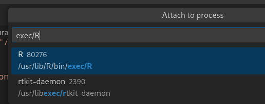
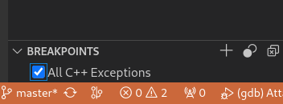
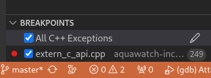
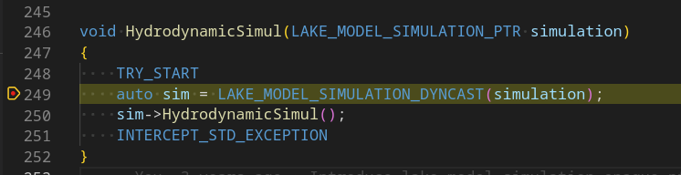
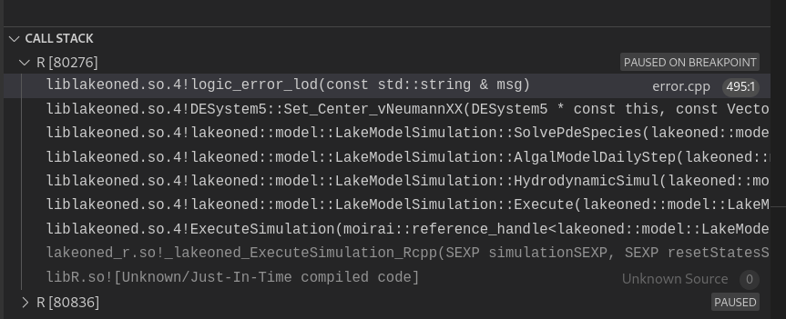

Background
I am dusting off a codebase for water quality modelling in lakes. This is C++ code compiled to a dynamic library, and accessible from R using Rcpp for glue code.
A few years ago found out about https://github.com/renkun-ken/vscode-rcpp-demo, and this got me started debugging C++ code run from R process, using VSCode.
Problem description
Running the model from its R package, I bump into an issue running a funciton for hydrodynamic simulation:
# ResetRecorders(lms)
SimpleIceModel_R(lms)
HydrodynamicSimul_R(lms)which results in the following error and stack trace:
Error: Cannot assign a value to an empty vector
3. stop(structure(list(message = "Cannot assign a value to an empty vector",
call = NULL, cppstack = NULL), class = c("std::runtime_error",
"C++Error", "error", "condition")))
2. HydrodynamicSimul_Rcpp(simulation)
1. HydrodynamicSimul_R(lms)CAUTION: Do you really need to use a debugger…
While “Cannot assign a value to an empty vector” sounds like generic warning from a standard library, in this case this happened to be a custom message that has a match in a full text search of the codebase, and a clue as to what may be happening. It is easy to end up with blinkers using an interactive debugger, where sometimes stepping back and thinking may be the shortest path to resolution.
Be it as it may, I need to document the debugging setup in this post for future reference. Let’s assume we do really need a debugger…
The last function in the R call stack is:
HydrodynamicSimul_Rcpp <- function(simulation) {
invisible(.Call('_lakeoned_HydrodynamicSimul_Rcpp', PACKAGE = 'lakeoned_r', simulation))
}Re-running after setting in R:
options(error=recover)does not provide additional insight. We need to interactively debug the C++ code to locate the issue.
Walkthrough
Compiling C++ libraries in debug mode
Assumption: you are using Linux and the gnu toolchain.
Prerequisite: sudo apt install gdb
The C++ model is a dynamic library compiled with, well, any C++ compiler, but in practice g++. The compilation is managed using cmake with a pattern similar to this library.
I use a shell variable CM which is a shortcut to generate the makefiles from CMakeLists.txt, and echo $CM returns:
cmake -DCMAKE_CXX_COMPILER=g++ -DCMAKE_C_COMPILER=gcc -DCMAKE_INSTALL_PREFIX=/usr/local -DCMAKE_PREFIX_PATH=/usr/local -DCMAKE_MODULE_PATH=/usr/local/share/cmake/Modules/ -DCMAKE_BUILD_TYPE=Release -DBUILD_SHARED_LIBS=ON ..To compile in Debug mode let us use -DCMAKE_BUILD_TYPE=Debug:
CM="cmake -DCMAKE_CXX_COMPILER=g++ -DCMAKE_C_COMPILER=gcc -DCMAKE_INSTALL_PREFIX=/usr/local -DCMAKE_PREFIX_PATH=/usr/local -DCMAKE_MODULE_PATH=/usr/local/share/cmake/Modules/ -DCMAKE_BUILD_TYPE=Debug -DBUILD_SHARED_LIBS=ON .."I can then recompile my shared library for lake modelling, and optionally its dependencies (moirai):
cd ${GITHUB_REPOS}/moirai
mkdir -p build ; cd build
$CLEAN_BUILD
$CM
$MAKE_CMD
sudo make installcd ${GITHUB_REPOS}/path/to/lake_model_src/
mkdir -p build ; cd build
$CLEAN_BUILD
$CM
$MAKE_CMD
sudo make installBuild the Rcpp glue code in debug mode
The issue may be in the Rcpp glue code used for the R package. Compiling this in debug mode can be achieved with custom c++ compilation flags such as in this Makevars file:
# For debugging the bindings
CPP_LANG_FLAGS = --std=c++0x -g -O0 Creating a VSCode debug configuration
We need to define a configuration in the project “launch.json” file of the VSCode debugger. See code.visualstudio.com “Configure C/C++ debugging” for reference.
I end up setting up the following configuration in launch.json:
"configurations": [
{
"name": "(gdb) Attach to R process",
"type": "cppdbg",
"request": "attach",
"program": "/usr/lib/R/bin/exec/R",
"processId": "${command:pickProcess}",
"MIMode": "gdb",
"miDebuggerPath": "gdb",
"additionalSOLibSearchPath": "/home/xyz123/src/aquawatch-inception/lake/LAKEoneD/lake_lib/build",
"symbolLoadInfo": {
"loadAll": false,
"exceptionList": "liblakeoned.*so*;lakeoned_r.*so*"
},
"setupCommands": [
{
"description": "Enable pretty-printing for gdb",
"text": "-enable-pretty-printing",
"ignoreFailures": true
}
]
}
]I cannot remember why I turn off loading all symbols ("loadAll": false,) in symbolLoadInfo, probably because this was sluggish for no benefit (no debug symbols to load). Instead I specify specific libraries for which to seek to load debug symbols:
liblakeoned.*so*for the shared library with the core modelling codelakeoned_r.*so*for the shared library with the Rcpp code
I think I do need to specify the location of the program to attach to, using "program": "/usr/lib/R/bin/exec/R",. For an R session from the command line this is definitely ran from the entry point /usr/lib/R/bin/exec/R. Note that if you attach to a process run from RStudio, this seems to be another entry point, perhaps /usr/lib/rstudio/resources/app/bin/rsession. I’ve not yet tested.
Launch R
Launching R from the command line, then loading my lake modelling package:
library(lakeoned)to attach from VSCode to the process:

you can then search by string, for instance exec/R

and once you accept and attach, the VSCode “Debug Console” window reports the following:
Loaded '/usr/lib/R/site-library/xts/libs/xts.so'. Cannot find or open the symbol file.
Loaded '/home/xyz123/R/local/lakeoned/libs/lakeoned_r.so'. Symbols loaded.
Loaded '/usr/local/lib/liblakeoned.so.4'. Symbols loaded.
Loaded '/usr/local/lib/libmoirai.so.1'. Cannot find or open the symbol file.
Loaded '/usr/lib/x86_64-linux-gnu/libboost_filesystem.so.1.74.0'. Cannot find or open the symbol file.We have symbols loaded for out lakeoned libraries or bindings, but not the libmoirai library. additionalSOLibSearchPath contains “/home/xyz123/src/aquawatch-inception/lake/LAKEoneD/lake_lib/build” but does not contain a path to debug symbols for libmoirai.so.1 hence symbols not found. This is probably not essential, so we’ll keep things are they are.
Let’s try to catch the exception by setting up to catch all exceptions in VSCode:

And run our problematic function from R:
HydrodynamicSimul_R(lms)And… no VSCode debugger activation. Just the same error message in the R terminal
I am not totally sure of the cause, but I think this is because Rcpp has its own error trapping and handling.
Let’s then have a specific set of break points in the codebase to try to diagnose:
Setting up breakpoints
void HydrodynamicSimul(LAKE_MODEL_SIMULATION_PTR simulation)
{
TRY_START
auto sim = LAKE_MODEL_SIMULATION_DYNCAST(simulation);
sim->HydrodynamicSimul();
INTERCEPT_STD_EXCEPTION
}Let’s set up a breakpoint at the line auto sim = LAKE_MODEL_SIMULATION_DYNCAST(simulation);.

Now if we re-run from R HydrodynamicSimul_R(lms), we do have the expected break in VSCode, hooray!

stepping through gradually helps figure out where things go awry:
for (t = 0; t < Nt; t++)
{
DoHourlyHydroSimulation();
etc();
}
and in fine this is indeed a custom error message (remember the warning at the start of the post?), which hints at a lack of proper initialisation of receiving vectors for model outputs.
size_t n = to.size();
if (n == 0)
lakeoned::exceptions::ThrowInvalidOperation("Cannot assign a value to an empty vector");